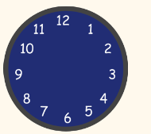
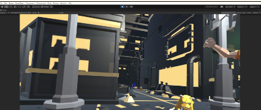

概要
Unityで「CGアニメーション」と「アプリ製作」を組み合わせた作品です。 まず、unityでのCGアニメーションについてです。 猫の主人公が、この世の中に飛び出したら人間とぶつかり逃げて道路を飛び出していくというストーリーを作りました。 アプリ製作については、アプリを使用しているときの日付や日時が取得されてそれが書き出されるという仕組みになっています。 その二つを組み合わせるために、「VideoPlayer」というコンポーネントを使って背景に 自作のCGアニメーション動画を流しながら自作のアナログ時計と日付が動くという仕組みになっています。
学習した内容
今回の作品を作る上で大きく２つ学んだことがあります。
- CGアニメーションでの視点移動などについて。
- アプリ製作でのアナログ時計の作る方法
試したこと１
CGアニメーション: 人を動かすには、ただ位置を移動するだけではなくアニメーションと共に 移動しなければいけません。そのためには、「Mixamo」というアニメーションダウンロードサイトから歩いているアニメーションをダウンロードしてそれを再生しながら 動かすスクリプトを書きました。
試したこと２
アプリ製作:アナログ時計を作る際に、針が１秒間にどのくらい動くかという細かい動きがとても重要になるので特殊な計算機をスクリプト内で理解しながら書いてみるのが少し難しい点でした。
作品の説明・製作履歴
まず、全般的にUnityで作られて組み合わさって作られているため 「ビルド」という機能というWindowsで開けるようなアプリになっています。 針が１秒単位で動いているアナログ時計に、日にちが書かれているのに 背景に自作のCGアニメーション動画が流れるようになっています。結果・検討・振り返り
始めての事が多くてエラーが起こると、とても困ってしまうことがあるのですが
自由研究が最後ということで始めてのことに挑戦してみようと思っていたので
もう少しこの作品を時計やアニメーション動画を美化していこうと思っています。


終わりに
自分のアイデアを形にできることが楽しかったというのと、試行錯誤を繰り返すことでスキルアップができ、自分自身の成長を感じられた。将来的にもこの分野で挑戦したいと思う。